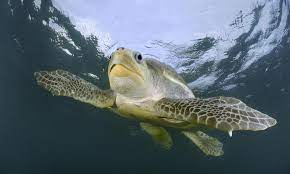
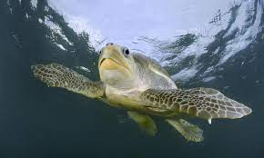

Olive Ridley Sea Turtle
The comparatively small sea Turtle attains an average length of about 2 ft (61 cm). The species also displays a slight degree of sexual dimorphism. However, it does not appear in the usual manner. Firstly, the overall weight and length of both genders remain roughly equal, in most cases. But, the female of the species typically develops a slightly more rounded carapace than that of the male. Further, mature individuals average about 101 lb (46 kg) in weight. Even exceptional individuals rarely exceed a weight of 110 lb (50 kg). Yet the tiny hatchlings average a mere 0.05 lb (20 grams). Finally, in color, adults of this rather remarkable species most commonly display a combination of various shades of olive green.
 

© Turtle Kingdom. All Rights Reserved.